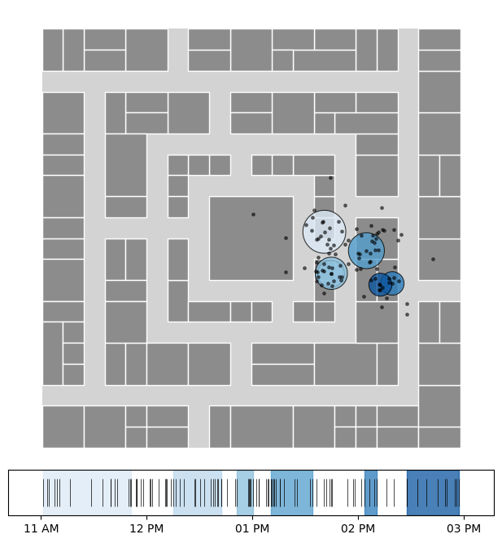
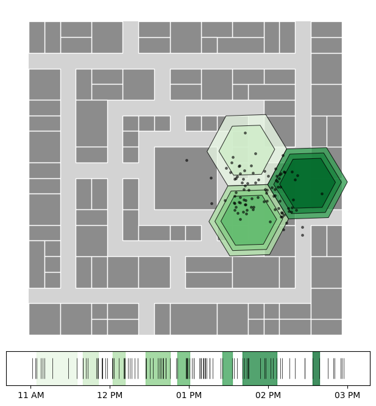
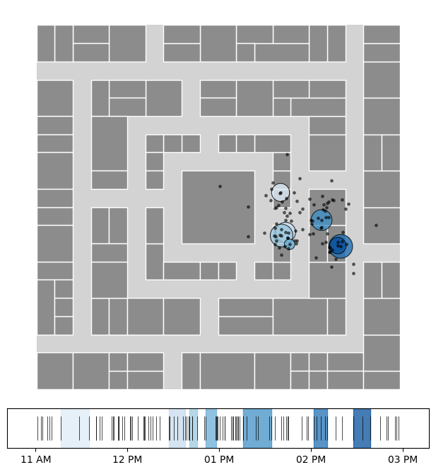

Stop Detection
Stop detection is the process of identifying stationary periods in GPS mobility trajectories. It distinguishes between stops (meaningful stationary locations) and trips (movement between stops), which is fundamental for understanding human mobility patterns.
Overview of stop-detection methods
A comparison of the stop-detection algorithms in NOMAD is shown below.

Runtime comparison of stop-detection algorithms.
Method name |
Parameters |
Description |
|---|---|---|
dist_thresh, min_pts, time_thresh |
Density-based clustering that finds stops as spatial clusters where points are within distance and time thresholds |
|
time_thresh, min_pts, min_cluster_size |
Hierarchical density-based clustering that adapts to varying density levels and automatically selects clusters |
|
time_thresh, min_cluster_size, dur_min |
Tessellation-based approach that groups consecutive pings in the same spatial cell for privacy-aware stop detection |
|
dt_max, delta_roam, dur_min |
Sequential algorithm that scans trajectories chronologically, identifying stops based on spatial diameter and temporal gaps |
DBSCAN
The TA-DBSCAN (Temporal-Augmented DBSCAN) algorithm is an adaptation of DBSCAN. Unlike in plain DBSCAN, we also incorporate the time dimension to determine if two pings are “neighbors”. This implementation relies on 3 parameters:
time_threshdefines the maximum time difference (in minutes) between two consecutive pings for them to be considered neighbors within the same cluster.dist_threshspecifies the maximum spatial distance (in meters) between two pings for them to be considered neighbors.min_ptssets the minimum number of neighbors required for a ping to form a cluster.
Notice that this method also works with geographic coordinates (lon, lat), using Haversine distance.
Source: Ester, M., Kriegel, H. P., Sander, J., & Xu, X. (1996). A density-based algorithm for discovering clusters in large spatial databases with noise. Proceedings of the Second International Conference on Knowledge Discovery and Data Mining (KDD-96), 226-231.

TA-DBSCAN stops with post-processing. See the full example.
HDBSCAN
The HDBSCAN algorithm constructs a hierarchy of non-overlapping clusters from different radius values and selects those that maximize stability.
Source: Campello, R. J., Moulavi, D., & Sander, J. (2013). Density-based clustering based on hierarchical density estimates. Pacific-Asia Conference on Knowledge Discovery and Data Mining (PAKDD), 160-172.

HDBSCAN stops with post-processing. See the full example.
Grid-based
The stop detection algorithms implemented in nomad support different combinations of input formats that are common in commercial datasets, detecting default names when possible:
timestamps in
datetime64[ns, tz]or as unix seconds in integersgeographic coordinates (
lon,lat) which use the Haversine distance or projected coordinates (x,y) using meters and euclidean distance.Alternatively, if locations are only given through a spatial index like H3 or geohash, there is a grid_based clustering algorithm requiring no coordinates.
The algorithms work with the same call, provided there is at least a pair of coordinates (or a location/spatial index) as well as at least a temporal column.
Source: NOMAD implementation using spatial tessellation (H3, S2) for trajectory segmentation.

Grid-based stops. See the full example.
Lachesis
The Lachesis algorithm is a sequential algorithm inspired by the one in Project Lachesis: Parsing and Modeling Location Histories (Hariharan & Toyama). This algorithm for extracting stays is dependent on two parameters: the roaming distance and the stay duration.
Roaming distance represents the maximum distance an object can move away from a point location and still be considered to be staying at that location.
Stop duration is the minimum amount of time an object must spend within the roaming distance of a location to qualify as a stop.
The algorithm identifies stops as contiguous sequences of pings that stay within the roaming distance for at least the duration of the stop duration.
This algorithm has the following parameters, which determine the size of the resulting stops:
dur_min: Minimum duration for a stay in minutes.dt_max: Maximum time gap permitted between consecutive pings in a stay in minutes (dt_max should be greater than dur_min).delta_roam: Maximum roaming distance for a stay in meters.
Source: Hariharan, R., & Toyama, K. (2004). Project Lachesis: Parsing and modeling location histories. International Conference on Geographic Information Science, 106-124.

Lachesis stops. See the full example.